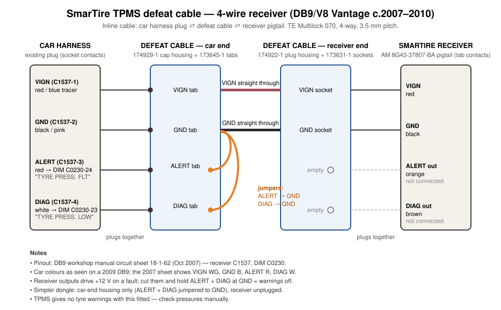

Gaydon cars up to about MY2010 use a SmarTire 433.92 MHz tyre-pressure system: four wheel sensors and a receiver (AM 8G43-37807-BA), which sits under the glovebox from about MY2006/07. The sensor batteries are potted in and can't be replaced, so a dead sensor eventually brings up "Check Tyres" or "Tyre System Fault" on the cluster. Later cars (from about 2010) use Beru/HUF, and nothing here applies to them.
| Function | Car harness (2009) | Receiver pigtail | Goes to |
|---|---|---|---|
| Ignition feed | red / blue | red | Boot fusebox F13 (10 A) |
| Earth | black / pink | black | Earth "MMM, GPS & Tyre Press" |
| DIAG | white | brown | Cluster C0230-23 "TYRE PRESS. LOW" |
| ALERT | red | orange | Cluster C0230-24 "TYRE PRESS. FLT" |
The functions come from DB9 workshop manual circuit sheet 18-1-62 (receiver connector C1537). Colours were checked on this car; the 2007 sheet shows different colours for the ignition feed and earth, so go by colour and function, not pin number.
When there's a genuine fault, the receiver's two outputs (orange and brown) send +12 V to the cluster to turn the warnings on. The defeat cuts those two outputs and links the car's two warning wires to earth, so the cluster always sees "no warning". Ignition feed and earth still pass through, so the receiver stays powered and the cluster sees nothing wrong.

| Car end — cap housing, tab contacts | Receiver end — plug housing, socket contacts |
|---|---|
| Ignition feed tab | Ignition feed socket (straight through) |
| Earth tab | Earth socket (straight through) |
| DIAG tab — linked to earth | empty |
| ALERT tab — linked to earth | empty |
A simpler version is just the car-end housing with the two links, and the receiver left unplugged. It's fully reversible either way.
The connector is TE Connectivity Multilock 070, 4-way, single row, 3.5 mm pitch, 1.8 mm tabs, natural white. The car harness has the plug housing (socket contacts) and the receiver has the cap housing (tab contacts). Identified from photos scaled against a caliper reading across the plug face, and checked against TE's Multilock catalogue.
| TE part | Farnell code | Description | Pack | £ ex VAT |
|---|---|---|---|---|
| 174929-1 | 2310240 | Multilock 070 cap housing, 4-way (tabs) | 20 | 11.94 |
| 174922-1 | 3134591 | Multilock 070 plug housing, 4-way (sockets) | 20 | 9.90 |
| 173645-1 | 1863446 | Tab contact, 0.5–1.25 mm², tin | 100 | 7.03 |
| 173631-1 | 2528056 | Socket contact, 0.5–1.25 mm², tin | 100 | 11.20 |
| Total, enough for about 20 cables | 40.07 |